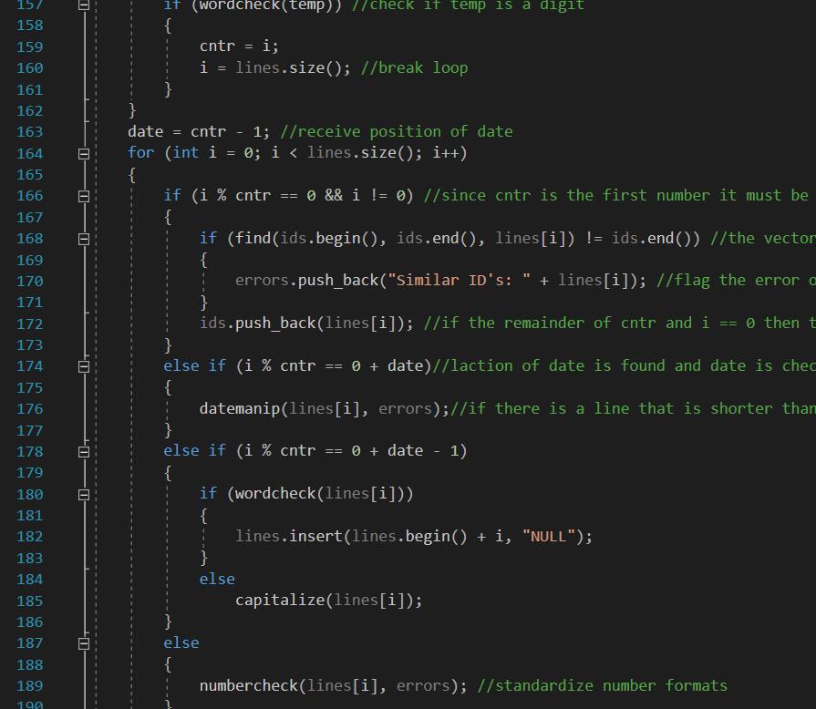
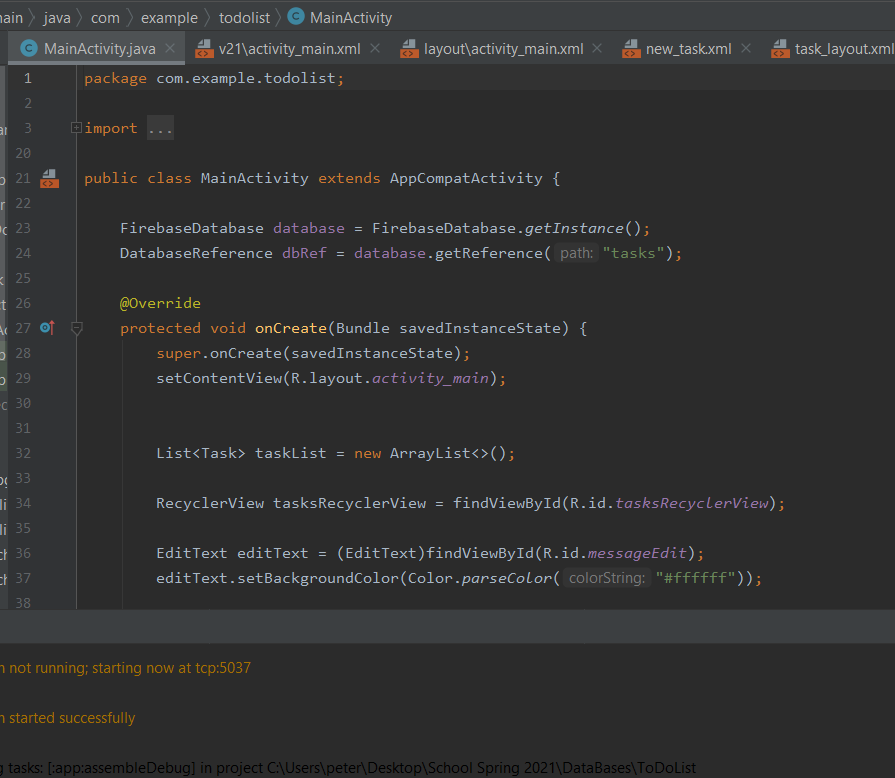
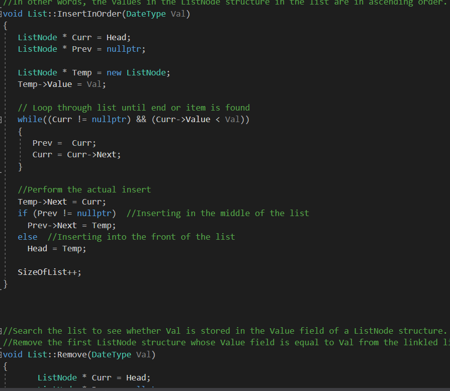
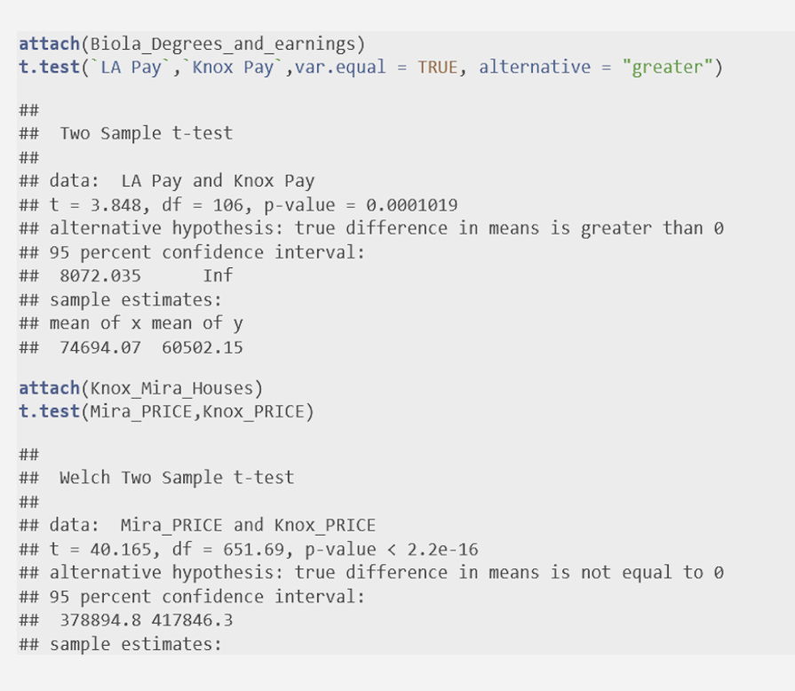

Experience
In the Navy, I served 4 years as an Aircrewman on the P-3 Orion and 2 years as a SeaBee Equipment Operator. Obtained a bachelors in computer science from BIOLA university after my enlistment.
Highly motivated with a "Can Do" attitude ready to accomplish the mission at hand.
- 6 years in US Navy
- C++
- Leadership
- Python
- MySQL Databases
- Tableau
Programs
Below are links to a few programs I have accomplished.

ETL Exercise
The ReDO program will extract and transform the data located in the ETLLegacyDBData text file and the ETLManualData
csv file. The transforming process standardizes all formats and organizes the data into designed columns.
There is an error log that is also exported once the transforming process is completed in order to log all changes
that were made. The transform process also involves combining data from both files into one for a more convenient upload.
Once upload to MySQL database has been completed, the ETLWEB.php code displays data online using Google Charts.

ToDoList Exercise
Using Android Studio this app allows the user to make a to do list for
the day. The app uploads the task to a firebase realtime database and stores all tasks
created. The app had to be uploaded to github via zip file due to its size.

Linked List with Dates
The date database program allows the option of uploading a txt file with dates
already written out, manually entering the desired dates, or randomly creating and
entering as many dates as desired. The dates are entered into database and connected
using a linked list. Once the dates are in the database, there are options of deleting,
adding, modifying, or searching through the stored dates.

Linked List with Dates
This is a word document presentation using R-Studio to statistically analyze
starting income and house prices in California and Tennessee to determine the ability
to own a home. In the presentation box plots and t-tests are used to develop
hypothesis and findings.